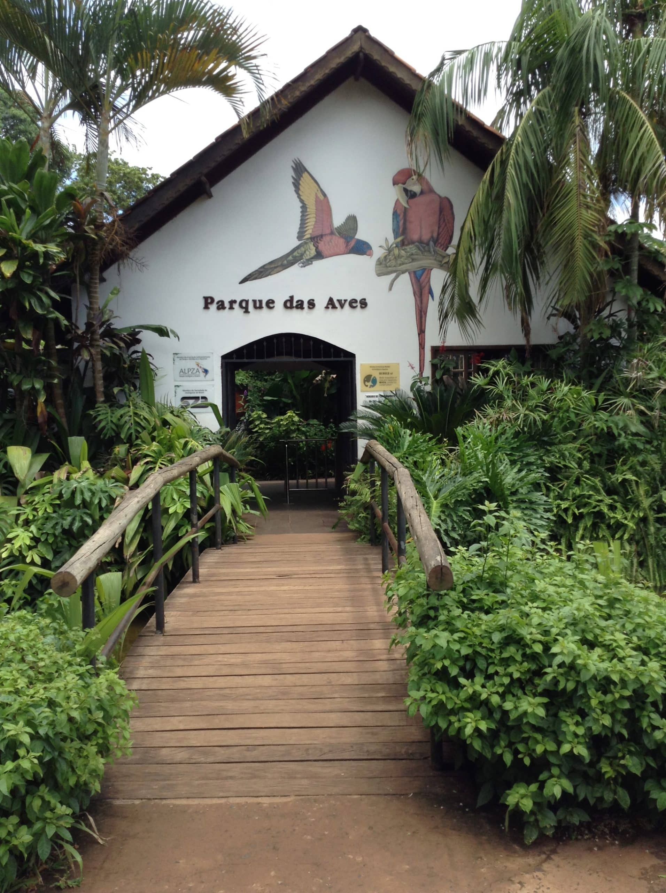
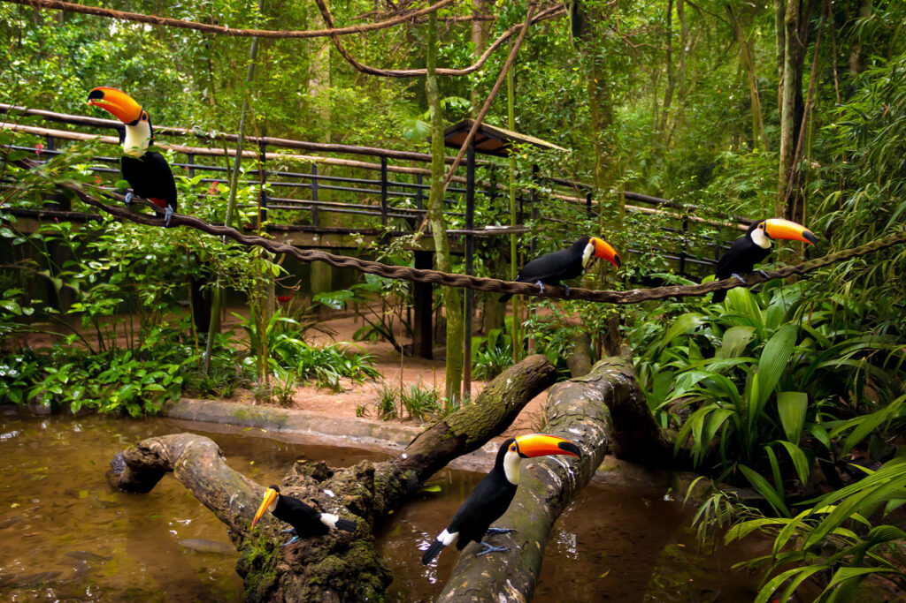
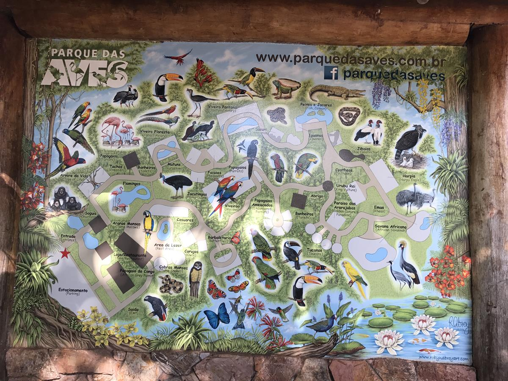

Apresentação
O Parque das Aves é um dos principais atrativos turísticos do Paraná e um importante centro de conservação da fauna brasileira. Localizado em Foz do Iguaçu, próximo às Cataratas do Iguaçu, o parque abriga centenas de espécies de aves, além de outros animais da Mata Atlântica. Seu objetivo é promover a conservação da biodiversidade, a educação ambiental e a conscientização sobre a importância da preservação da natureza.

Desenvolvimento no Paraná
O Parque das Aves foi fundado em 7 de outubro de 1994, na cidade de Foz do Iguaçu, no oeste do Paraná. Criado pelo casal de naturalistas Dennis e Anna Croukamp, o parque surgiu com a proposta de proteger aves da Mata Atlântica e de outras regiões brasileiras. Ao longo dos anos, ampliou suas instalações, investiu em programas de conservação, pesquisa e reprodução de espécies ameaçadas, tornando-se uma referência nacional e internacional na proteção da fauna.

Importância para a identidade cultural paranaense
O Parque das Aves possui grande importância para a identidade cultural do Paraná por representar o compromisso do estado com a preservação da natureza e da biodiversidade. Além de proteger espécies ameaçadas, o parque incentiva a educação ambiental e desperta o respeito pela fauna brasileira. Como um dos principais pontos turísticos do Paraná, fortalece a imagem do estado como um destino que une conservação ambiental, turismo sustentável e valorização do patrimônio natural, despertando orgulho nos paranaenses e contribuindo para o reconhecimento da riqueza ambiental da região.
